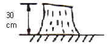
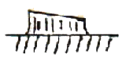
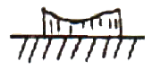
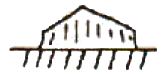
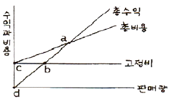
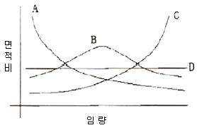
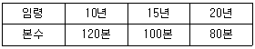

산림산업기사 (2009-07-26 기출문제)
1과목: 조림학
1. 다음 수종 중 양수는?
- 주목, 비자나무
- 삼나무, 사시나무류
- 솔송나무, 편백
- 가문비나무, 전나무
(정답률: 68%)

2. 묘목의 식재 밀도와 관련하여 바르게 기술되어 있는 내용은?
- 양수는 음수에 비하여 상대적으로 밀식하는 것이 좋다.
- 대경재를 조기에 생산하기 위해서는 밀식하는 것이 좋다.
- 토양 조건이 척박한 산지에는 보통 식재 밀도보다 밀식하는 것이 좋다.
- 소나무의 용재를 생산하고자 할 경우에는 소식한다.
(정답률: 56%)
3. 상수리나무의 잎색이 황녹색이 되고 잎 길이가 작아졌다. 어느 양분의 결핍 증상인가?
- 철
- 인산
- 질소
- 칼슘
(정답률: 44%)
4. 나무의 수체에서 수분이 올라갈 때 최저의 저항을 받는 경로의 조직은?
- 피층
- 사부
- 부름켜
- 목부
(정답률: 90%)
5. 유림에 대한 무육작업으로 알맞은 것은?
- 간벌과 가지치기
- 가지치기와 덩굴치기
- 풀베기와 덩굴치기
- 풀베기와 간벌
(정답률: 64%)
6. 일반적으로 대부분의 침엽수와 참나무류, 피나무, 느릅나무 등의 여러 가지 활엽수 생육에 양호한 조건을 제공하는 토양산도의 범위는?
- pH 3.5~4.5
- pH 5.5~6.5
- pH 7.5~8.5
- pH 3~4
(정답률: 88%)
7. 칼슘이온의 양이온치환용량 1M.E.의 양은? (단, 칼슘의 원자량은 40이고 원자가는 2이다.)
- 2g
- 4g
- 0.02g
- 0.2g
(정답률: 70%)
8. 일반적으로 조림지에 대한 풀베기작업을 바르게 명하고 있는 것은?
- 풀베기작업은 제벌작업과 함께 실시하는 것이 좋다.
- 풀베기작업의 반복횟수는 수종이나 묘목 등에 따라 가감할 수 있다.
- 풀베기작업을 년 1회 실시할 경우에는 초가을 이후에 실시하는 것이 바람직하다.
- 낙엽송 조림지는 가능한 한 빨리 6월 이전에, 소나무 조림지는 다소 늦은 8월 하순에 풀베기 작업을 실시한다.
(정답률: 62%)
9. 리기다소나무 종자 1L의 무게를 달았더니 520g이었다. 이것을 종이위에 펴서 협잡물을 가려내어 협잡물의 무게를 달았더니 78g이었다. 리기다 소나무 종자의 순량율은?
- 15%
- 35%
- 55%
- 85%
(정답률: 62%)
10. 1-0 묘 일 때 판갈이 작업을 하지 않아도 좋은 수종은?
- 소나무류
- 잣나무
- 낙엽송
- 삼나무
(정답률: 57%)
11. 식재간격을 2.4m x 2.4m의 정방향식재형으로 인공조림을 하고자 할 때에 1ha당 식재본수는?
- 1700
- 2500
- 3000
- 5000
(정답률: 89%)
12. 종자 보관시 관을 밀봉하기 전에 그 상부에 생석회 염화석회와 같은 건과제를 넣어 저장 중 종자가 수분을 흡수하지 않도록 예방하는 것이 좋다. 이때 종자의 저장에 가장 효과적인 온도는 얼마인가?
- -10˚C ~ -5˚C
- -5˚C ~ -10˚C
- 1˚C ~ 5˚C
- 5˚C ~ 10˚C
(정답률: 79%)
13. 다음 중 발아율이 가장 낮은 수종은?
- 해송
- 측백나무
- 리기다소나무
- 전나무
(정답률: 61%)
14. 맹아갱신을 할 때의 벌채방법으로서 가장 좋은 것은 어느 것인가?




(정답률: 73%)
15. 묘목의 가식 요령으로 틀린 것은?
- 동해에 약한 유묘는 움가식을 한다.
- 지제부가 10cm이상 묻히도록 깊게 가식한다.
- 비가 오거나 또는 비가 온후 바로 가식한다.
- 묘목의 끝이 남쪽으로 향하게 하여 45도 경사지게 한다.
(정답률: 64%)
16. 예비벌에서 벌채되는 임목은 전 임목재적의 몇 % 인가?
- 10~30
- 30~50
- 50~60
- 70~80
(정답률: 77%)
17. 다음 중 임분을 분류하는데 성격이 다른 한가지는?
- 원시림
- 천연림
- 불완전천연림
- 2차림
(정답률: 90%)
18. 조림 수종 선정시 우선적으로 고려할 사항은?
- 가지가 많이 나오는 수종
- 심을 곳의 환경에 적응할 수 있는 수종
- 씨앗의 값이 비싼 수종
- 외국에서 도입한 수종
(정답률: 86%)
19. 종자의 발아를 돕는 화학 자극제 중 특히 휴면 종자의 발아를 돕는 것은?
- 지베렐린
- 시토키닌
- 에틸렌
- 질산칼륨
(정답률: 69%)
20. 삽목발근이 용이한 수종은?
- 쥐똥나무
- 금송
- 느티나무
- 매실나무
(정답률: 64%)
2과목: 산림보호학
21. 솔나방의 성충 우화시기로 가장 적합한 것은?
- 4월 상순~5월 상순
- 5월 하순~6월 중순
- 6월 하순~7월 상순
- 7월 하순~8월 중순
(정답률: 30%)
22. 모잘록병의 발생 예방으로 가장 효과적인 방법은?
- 후파를 한다.
- 칼륨질 비료를 준다.
- 배수와 통풍을 개선한다.
- 토양반응을 중성화 시킨다.
(정답률: 80%)
23. 다음 수병 중에서 담자균류에 속하는 것은?
- 잎마름병
- 유관속시들음병
- 잎떨림병
- 녹병균
(정답률: 60%)
24. 잣나무 털녹병균은 다음 중 어느 곳을 통해 침입하는가?
- 뿌리의 상처
- 줄기의 상처
- 잎의 기공
- 줄기의 피목
(정답률: 73%)
25. 이종기생균에 속하지 않는 수병은?
- 잣나무의 털녹병
- 낙엽송의 끝마름병
- 포플러의 잎녹병
- 소나무의 혹병
(정답률: 38%)
26. 겨울포자가 이듬에 봄에 발아하여 형성하는 포자로 날아가서 소나무를 침해하는 것은?
- 여름포자
- 녹포자
- 담자포자
- 겨울포자퇴
(정답률: 43%)
27. 볕데기를 잘 일으키지 않는 수종은?
- 소나무
- 오동나무
- 가문비나무
- 호두나무
(정답률: 63%)
28. 빗자루병에 걸린 대추나무와 오동나무 등에 수간 주입하여 치료하는 약제는?
- 베노밀
- 옥시테트라사이클린
- 사이클로헥사마이드
- NCS제
(정답률: 91%)
29. 파이토플라스마에 의한 수병은?
- 대추나무 빗자루병
- 벚나무 빗자루병
- 낙엽송 잎떨림병
- 흰비단병
(정답률: 80%)
30. 흡즙성 해충이 아닌 것은?
- 느티나무벼룩바구미
- 버즘나무방패벌레
- 솔껍질깍지벌레
- 소나무좀
(정답률: 64%)
31. 종실을 가해하는 해충이 아닌 것은?
- 밤바구미
- 도토리거위벌레
- 복숭아유리나방
- 솔알락명나방
(정답률: 80%)
32. 농약의 화학명은 쓰기에 불편하므로 이를 간략히 하여 국제기관이나 이에 준하는 기관(BSI,ANSI)의 승인하에 국제적으로 통용되는 명칭을 무엇이라 하는가?
- 품목명
- 상품명
- 학명
- 일반명
(정답률: 50%)
33. 메타 20% 유제 100cc를 원액의 농도가 0.1%로 희석하려고 할 때 필요한 물의 양은 몇 cc인가? (단, 원액의 비중은 1이다.)
- 1000
- 10000
- 19900
- 29900
(정답률: 85%)
34. 벚나무 빗자루병의 설명으로 틀린 것은?
- 병원균은 가지 내 세포간극에서 수년간 살면서 가지를 굵게하고 매년 빗자루병을 만든다.
- 포플러나 복숭아의 잎에서는 잎의 뒷면에 나출자낭을 형성하고 오갈병을 일으킨다.
- 봄에 꽃이 피지 않는다.
- 병든 가지를 계속 신속하게 제거해도 박멸을 할 수 없다.
(정답률: 70%)
35. 목재 부후에 대한 설명으로 틀린 것은?
- 목재생산 면에서는 손실이지만 생태적인 면에서는 식생의 천이를 돕고, 다양한 생물의 서식지를 만들어 준다.
- 목재부후는 활력이 왕성한 어린나무에서 많이 발생하므로 성목이 되기까지 예방관리가 중요하다.
- 목재부후균은 수분과 양분이 잘 공급되는 뿌리와 줄기의 경계부에서 특히 잘 번성한다.
- 목질부를 썩히는 균은 갈색부후균과 백색부후균 및 연부후균으로 나누어진다.
(정답률: 23%)
36. 소나무좀 방제법으로 틀린 것은?
- 6월 이전에 임내의 잡초를 없앤다.
- 성충을 산란하게 한 후 이목을 박피하여 소각한다.
- 동기 별채목과 벌근은 다음해 5월 이전에 박피한다.
- 수세가 쇠약한 나무, 설해목, 풍해목, 피해목은 껍질을 벗긴다.
(정답률: 54%)
37. 천적의 보호와 이용으로 해충을 방제하는 것은 어느 방법에 속하는가?
- 페로몬과 기타 생리활성물질 이용 방제법
- 임업적 방제법
- 생물학적 방제법
- 물리적 방제법
(정답률: 76%)
38. 내화력이 가장 약한 수종은?
- 회양목
- 고로쇠나무
- 삼나무
- 은행나무
(정답률: 71%)
39. 묘포장의 종자 또는 새싹을 가해하는 조류가 아닌 것은?
- 까마귀
- 멧비둘기
- 딱따구리
- 꿩
(정답률: 88%)
40. 천공성해충이 아닌 것은?
- 알락하늘소
- 버들바구미
- 집시나방
- 소나무좀
(정답률: 60%)
3과목: 임업경영학
41. 임목평가방법에 대한 설명으로 적절치 못한 것은?
- 유령림의 임목평가방법으로는 원가방식을 채택하는 것이 보통이다.
- 벌기 미만 장령림의 임목평가로는 임목기망가법이 적절하다.
- 벌기 이상 임분의 임목평가로는 시장가역산법이 적절하다.
- 중령림의 임목평가로는 비용가법이 적절하다.
(정답률: 72%)
42. 1970년의 ha당 재적이 150m3, 10년 후인 1980년의 재적이 220m3일 때 복리산 공식에 의하여 성장률을 구하면 얼마인가?
- 4.5%
- 3.5%
- 4.9%
- 3.9%
(정답률: 20%)
43. 다음 그림과 같은 손익분기도표가 있다. 손익분기 판매량에 해당되는 곳은?

- a
- b
- c
- d
(정답률: 87%)
44. 다음 그림과 같은 4가지 형태의 산림 구조 중에서 수입은 적고 투자가 많은 산림구조는?

- A형 산림구조
- B형 산림구조
- C형 산림구조
- D형 산림구조
(정답률: 76%)
45. 수익방식에 의한 임지평가방법의 내용 중 틀린 것은?
- 임지에서 장래 영속적으로 순수익을 얻을 수 있는 원금을 가지고 임지의 가격으로 하는 방법이다.
- 임지를 취득하고 이를 조림 등 임목육성에 적합한 상태로 개량하는데 소요된 순비용의 현재가 합계를 평가하는 방법이다.
- 수익환원법은 연년히 또 영구히 순수익을 얻을 수 있을 때 적용하는 방법이다.
- 임지기망가법은 일제림을 전제로 하는 평가 방법이다.
(정답률: 43%)
46. 임목을 평가하는 방법 중 유령림에서 장령림에 이르는 중간 영급의 임목에 대한 평가방법으로 원가수익절충방식을 적용하는 대표적인 평가방법은?
- Glaser법
- 임목기망가법
- 매매가법
- 수익환원법
(정답률: 69%)
47. Huber식에 의해 벌채목의 재적을 계산하는 옳은 식은? (V=벌채목 재적(m3, go=원구단면적(m2), gm=중앙단면적(m2, gn=말구단면적(m2,L=재장(m)이다.)
- V = gnㆍL
- V = gmㆍL
- V = {(go+gn)/2}ㆍL
- V = {(go+4gm+g)/6}ㆍL
(정답률: 74%)
48. 임목 평가 방법에 대한 설명 중 옳지 않은 것은?
- 원가법은 실제 원가의 누계를 평가액으로 하는 것으로 이자를 계산인자에 포함하지 않으므로 계산이 간단하다.
- 임목비용가는 일제림에서 임목을 일정기간 육성하는데 소요된 순비용의 전가합계이다.
- 임목기망가법은 평가하고자 하는 임목이 현재부터 벌채예정년까지의 사이에 기대되는 장차의 수익의 전가합계에서 그동안에 소요되는 비용의 전가합계를 공제한 차액을 말한다.
- 수익환원법은 평가 대상 임목에서 장차 얻어질 수 있을 것으로 추정되는 매년의 예상수익과 예상비용의 차이, 즉 예상이익을 현재의가치로 환산하여 임목의 가치를 구하는 방법이다.
(정답률: 41%)
49. 임업경영의 성과를 나타내는 가장 정확한 지표는?
- 임업조수익
- 임업소득
- 임업 현금수입
- 임업총수입
(정답률: 80%)
50. 임업경영의 형태 중 주업적 임업경영의 유형이 잘못된 것은?
- 식재→육림→벌채→원료원목공급(제지)
- 식재→육림→표고생산·제탄·제재
- 식재→육림→임목매각
- 식재→육림→벌채→원목매각
(정답률: 71%)
51. 재적수확 최대의 벌기령을 택하는 방법은?
- 벌기평균생장량이 최대일 때
- 등귀생장이 최대일 때
- 형질생장이 최대일 때
- 총가생장이 최대일 때
(정답률: 80%)
52. 우리나라 공, 사유림의 경영계획 작성에서 1개의 임반면적은 가능한 몇 ha 내외로 구획하도록 정하고 있는가? (단, 현지 여건상 불가피한 경우는 제외한다.)
- 100ha 내외
- 200ha 내외
- 300ha 내외
- 400ha 내외
(정답률: 77%)
53. 공,사유림 경영계획 편성시 임반을 표기하는 요령으로 맞는 것은?
- 123(아라비아 숫자로 표시)
- 가(가,나,다로 표시)
- 123-가(아라비아 숫자와 가,나,다를 조합하여 표시)
- 가-1(가,나,다와 아라비아 숫자를 조합하여 표시)
(정답률: 83%)
54. 각자의 산림면적이 적고 산주수가 대단히 많으므로 몇 사람씩 하나로 합쳐서 산림을 경영하도록 하는 공동산림경영(협업경영)을 권장하는 바람직한 경영형태는?
- 겸업적 임업
- 주업적 임업
- 농가 임업
- 부업적 임업
(정답률: 59%)
55. 1인당 노동생산성을 나타내는 것은?
- (소득/경영종사자 수)=(자본/경영종사자 수)*(소득/자본)
- (경영종사자 수/소득)=(자본/경영종사자 수)*(소득/자본)
- (소득/경영종사자 수)=(경영종사자 수/자본)*(소득/자본)
- (소득/경영종사자 수)=(자본/경영종사자 수/자본)*(자본/소득)
(정답률: 40%)
56. 산림면적이 1500ha이고 윤벌기가 50년이며 1개의 영급이 10개의 영계로 구성되어 있을때 법정영급 면적은?
- 3ha
- 30ha
- 50ha
- 300ha
(정답률: 68%)
57. 산림조사기간 동안 측정할 수 있는 크기로 생장한 새로운 임목들의 재적을 무엇이라 하는가?
- 순변화량
- 진계생장량
- 순생장량
- 총생장량
(정답률: 75%)
58. 다음의 이령림의 본수령(평균 임령)은 얼마인가?

- 약 13.3년
- 약 13.5년
- 약 13.8년
- 약 14.3년
(정답률: 62%)
59. 산림자원 조성 및 관리에 관한 법률 시행규칙상 산림자원 조성을 위한 산림관리 기반시설의 범위에 해당하지 않는 것은?
- 산불방지임도
- 방화선
- 지선임도
- 산물반출임도
(정답률: 39%)
60. 벌채실행을 모두베기로 할 때 벌채면적은 최대 30ha 이내로 하되, 벌채면적이 5ha 이상일 경우에는 하나의 벌채구역을 몇 ha 이내로 하는가?
- 2ha
- 3ha
- 5ha
- 10ha
(정답률: 63%)
4과목: 산림공학
61. 집재가선에 있어서 와이어로프에 작용하는 하중에 대해 충분한 안전을 확보하기 위해서는 각 용도별로 안전계수를 결정하여 사용해야 한다. 스카이라인(가공본줄)의 안전계수는 얼마인가?
- 10 이상
- 1.5 이상
- 2.0 이상
- 2.7 이상
(정답률: 68%)
62. 강선에 의한 집재작업의 특징으로 부적합한 것은?
- 재료구득과 설치가 용이하다.
- 사용수명이 길다.
- 지형의 제약을 적게 받는다.
- 대경 장재의 집재에 적합하다.
(정답률: 42%)
63. 일반적으로 임도에서 보통 토사일 경우 절취 비탈면의 표준물매는?
- 0.4
- 0.6
- 0.8
- 1.0
(정답률: 49%)
64. 입목을 벌목할 수 있는 장비는?
- 프로세서
- 그래플쏘우
- 펠러번처
- 스키더
(정답률: 53%)
65. 산림관리기반시설의 설계 및 시설기준의 임도시설에 있어서 교량은 최고 수위로부터 교량 밑까지 (방장교에 있어서는 방장하부)의 높이를 얼마 이상으로 하여야 하는가? (단, 특수한 경우에는 제외한다.)
- 0.5m 이상
- 1.5m 이상
- 2.5m 이상
- 3m 이상
(정답률: 68%)
66. 산림관리기반시설의 설계 및 시설기준에서 정하고 있는 간선임도, 지선임도의 시설 대피소 설치간격 기준은 몇 m 이내로 하는가?
- 100
- 300
- 500
- 700
(정답률: 84%)
67. 유로가 비교적 짧고 계천바닥의 기울기가 급하며, 그 유량이 강우 또는 눈이 녹음으로써 급격히 증가하여 계안 또는 계류바닥을 침식시켜 모래 및 자갈 등을 생산 유하시켜 하류에 퇴적하는 황폐계천은?
- 야계
- 계간
- 산복
- 조경
(정답률: 70%)
68. 산사태와 땅밀림의 차이점을 설명한 것으로 틀린 것은?
- 산사태는 지하수에 의한 영향이 크다.
- 땅밀림은 계속 재발 가능성이 크다.
- 산사태는 땅밀림에 비해 규모가 작다.
- 산사태는 사질토로된 지점에서 많이 발생한다.
(정답률: 65%)
69. 계간사방에 속하지 않는 것은?
- 사방댐
- 기슭막이
- 바닥막이
- 누구막이
(정답률: 49%)
70. 황폐지 유형 중 인위적인 피해로 발생된 지역은?
- 훼손지
- 붕괴지
- 황폐계류
- 밀린땅
(정답률: 83%)
71. 막쌓기라고도 하며 견치돌이나 큰 돌들을 사용할 수 있으므로 산림토목공사에서 흔히 사용하는 돌 쌓기 공법은?
- 찰쌓기
- 메쌓기
- 골쌓기
- 켜쌓기
(정답률: 48%)
72. 1m3의 흙을 파내면 부피는 약 얼마가 되는가? (단, 팽창율은 20%이다.)
- 0.8m3
- 0.9m3
- 1m3
- 1.2m3
(정답률: 81%)
73. 임도의 종단구배(%)를 구하는 방법은?
- (수직거리/비탈면거리)*100
- (수직거리/수평거리)*100
- (수평거리/비탈면거리)*100
- (수평거리/수직거리)*100
(정답률: 78%)
74. 임도노선계획에 의한 환경영향평가조사 주요 항목이 아닌 것은?
- 임도 사진
- 지형도
- 지형, 식생 등 자료
- 지질도
(정답률: 49%)
75. 채석장에서 떼어낸 돌을 소요치수에 따라 대체로 간면 직사각형 육면체가 되도록 각면을 다듬은 석재는?
- 마름돌
- 견치돌
- 막깬돌
- 야면석(들돌)
(정답률: 42%)
76. 중력댐의 합력 작용선이 제저의 중앙 1/3보다 하류측을 통과하도록 해야 하는 것은 다음 중 무엇에 대한 안정조건인가?
- 기초지반의 지지력에 대한 안정
- 제체의 파괴에 대한 안정
- 전도에 대한 안정
- 활동에 대한 안정
(정답률: 38%)
77. 수로의 횡단면적이 18m2이고, 매 초당 수로횡단면을 통과하는 유량이 72m3/s일 때 평균유속은?
- 0.25m/s
- 0.5m/s
- 2.0m/s
- 4.0m/s
(정답률: 78%)
78. 침투능이 가장 낮은 지피상태는?
- 활엽수임지
- 침엽수임지
- 초지
- 보도
(정답률: 78%)
79. 집재용 주 케이블(가공본줄)의 장력을 추정하기 위하여 중앙 처짐비를 측정한다. 이때 일반적인 표준 중앙처짐비는?
- 0.01~0.02
- 0.03~0.⑤
- 0.⑤~0.08
- 0.08~0.1
(정답률: 60%)
80. 다공정 임목 수확 장비를 이용하기 위한 특징 설명으로 틀린 것은?
- 조작 방법이 단순하고 자동으로 이루어지기 때문에 초보 기능인도 작업이 가능하다.
- 임상이 균일하여야 하며 급경사지에서는 사용을 제한 받는다.
- 지형에 많은 영향을 받고 주행성이 좋은 기본 탑재 장비가 필요하다.
- 장비가 고강이고 유지관리비가 많이 소요된다.
(정답률: 74%)